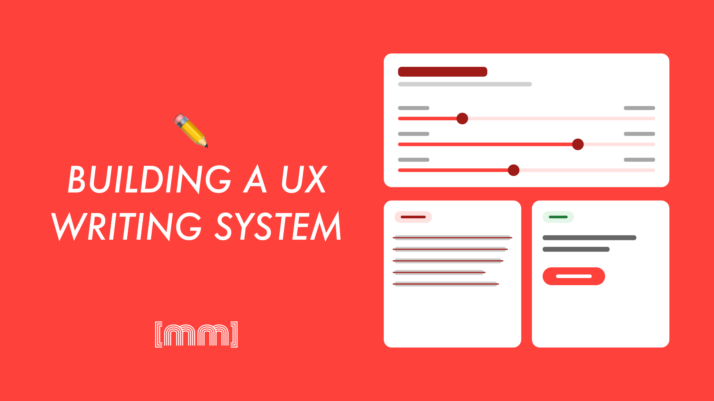
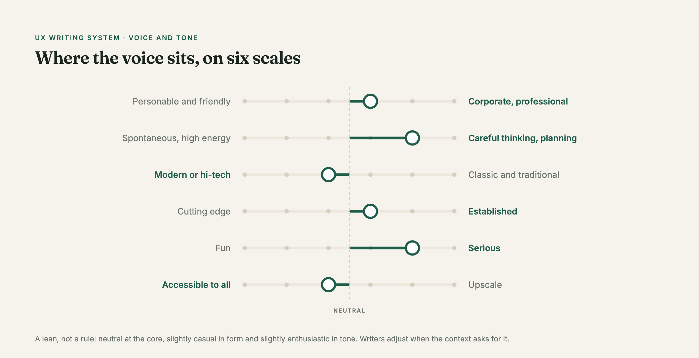
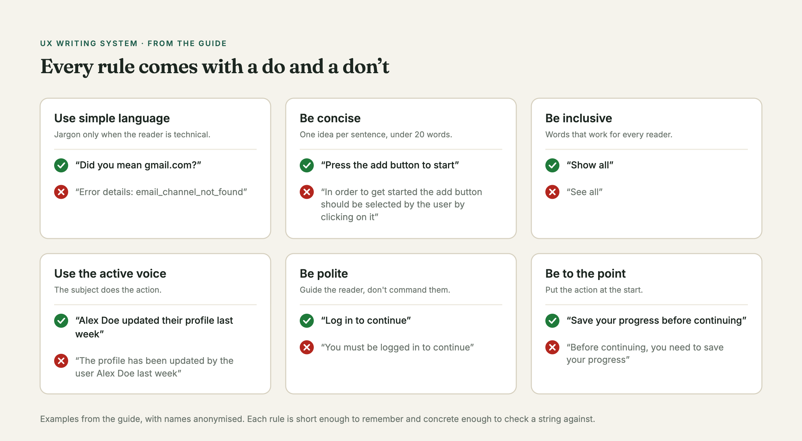
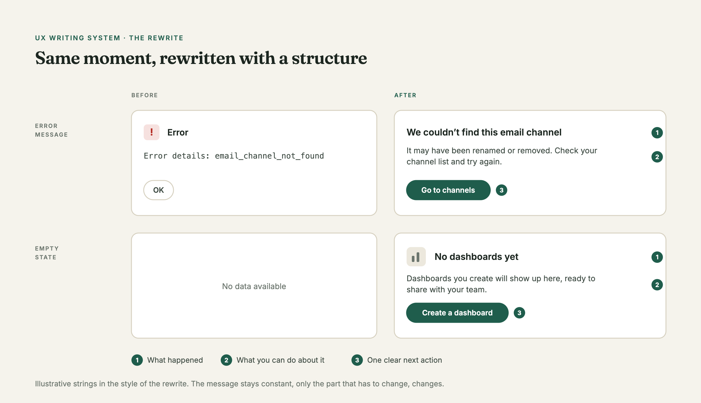

The problem
Nobody owned the words. Copy came from two places: the developers who built the feature, or us designers filling in the blanks. There were no guidelines, so every string was a personal judgement call.
The result was a product that spoke in a dozen slightly different voices. Text that meant the same thing was written a dozen different ways. And a lot of it wasn't neutral or inclusive — the app's landing page greeted everyone with "Benvenuto," the masculine default in Italian, regardless of who was reading.
Where I started
I'd just finished a couple of UX writing courses, so I had the theory fresh. The first thing I did was write the thing that didn't exist: a voice and tone guide.

The guide set a clear position — neutral but slightly casual in form, neutral but slightly enthusiastic in tone — and backed it with rules the whole team could actually use:
- Plain language, with room for jargon only when the audience was technical
- One idea per sentence, aim for under 20 words
- Active voice
- Guide the reader, don't command them ("Log in to continue," not "You must be logged in")
- Action first ("Save your progress before continuing," not the other way round)
Every rule came with a do / don't example, so it wasn't abstract. Someone writing an error message could open the guide and see exactly what "good" looked like.

The whole guide is online, anonymised: voice, tone scales, every rule with its examples, and how to write for errors and new features.
Read the full guide →The rewrite
With the guide in place, I went back through the existing copy. A few patterns kept coming up:
Fixing the defaults. "Benvenuto" became "Ciao" — one small change that stopped the product from assuming everyone's gender. I went looking for every case like it.
Collapsing the chaos. Empty states and notifications were the worst offenders: dozens of messages that were basically the same, all written differently. I unified them so the message stayed constant and only the part that genuinely had to change, changed. Same shape, predictable, easier to maintain.
A structure for errors. For error messages I leaned on a simple pattern — what went wrong, what you can do about it, and a clear next action. It turns a moment of frustration into something the reader can actually get past.
Making it readable. Shorter strings, unambiguous actions, terms as neutral and accessible as I could get them.
Keeping both languages in sync. I owned the English translation of every string, and my job wasn't just to translate — it was to make the English as clear and consistent as the Italian. Same voice, same rules, two languages. When a term got fixed in one, it got fixed in the other.

What changed
The product started sounding like one product. New copy had somewhere to look instead of being reinvented every time, and the guide gave developers and designers a shared reference — so the fixes didn't quietly drift back over time.
What I like about this project: the wins were small on their own. "Ciao" instead of "Benvenuto" is one word. But multiply that care across every screen and it's the difference between a product that talks at people and one that talks with them.